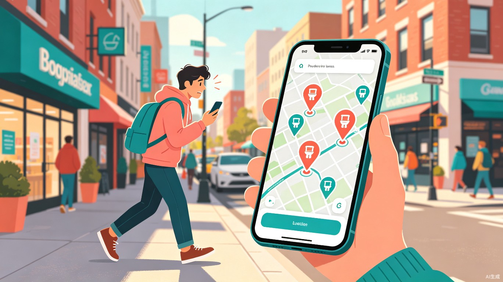
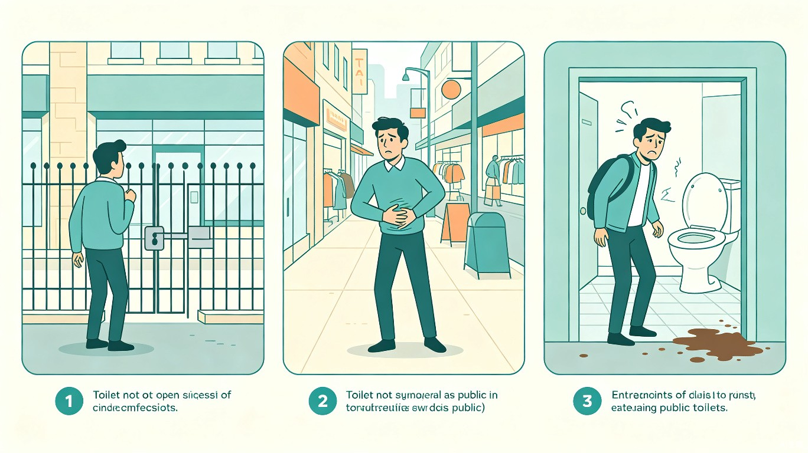
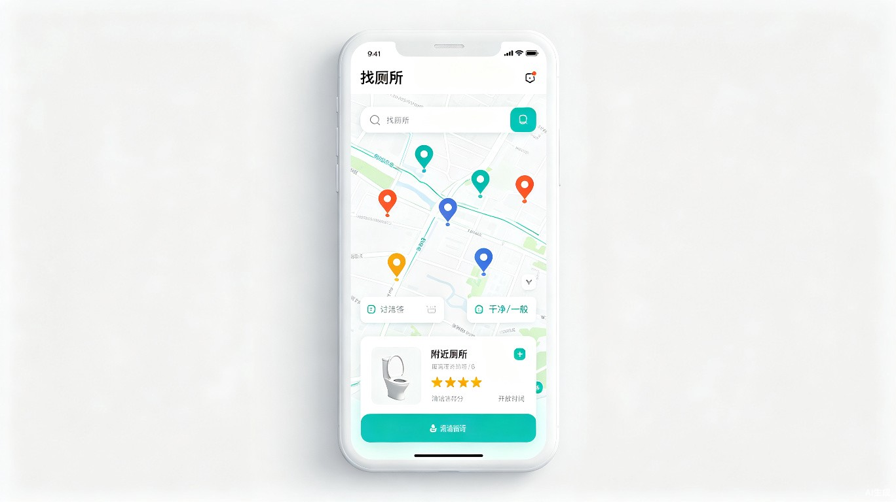

急所 — 智能找厕所微信小程序
出门在外，如厕无忧 — 定位附近厕所、实时查看开放状态与清洁评分

一、创意名称与介绍
创意名称：急所（JiSuo） — 一款基于地理位置的智能找厕所微信小程序
想解决什么问题？
出门在外突然内急，却不知道最近的厕所在哪里、是否对外开放、卫生条件如何。这是几乎每个人都经历过的尴尬处境——在商场、公园、步行街、旅游景区等公共场所，厕所信息不透明、不公开，导致用户只能"盲找"，浪费大量时间与体力。
为什么会想到做这个？
灵感来源于日常生活中反复遇到的痛点。无论是走在陌生的城市街道上，还是在大型购物中心里，"找厕所"始终是一个被忽视但高频存在的生活需求。国内现有地图软件虽然标注了部分公厕位置，但信息不完整、不实时，更无法查看开放状态和卫生评分。我们希望打造一个专门解决这一需求的垂直工具。
大概是什么产品？
微信小程序——无需下载、即开即用，依托微信庞大的用户基础和 LBS 定位能力，用户打开即可自动发现附近厕所，查看实时状态并导航前往。
二、目标用户及痛点
面向哪些用户？
- 通勤上班族：早高峰赶地铁时、加班后回家路上突发内急
- 旅行游客：在陌生城市或景区游览，不熟悉周边厕所分布
- 带娃家长 / 孕妇 / 老人：对如厕时效性要求更高，需要尽快找到干净厕所
- 外卖骑手 / 快递员：长时间户外工作，需要高效找到可用厕所
- 肠胃敏感人群：需要随时掌握附近厕所信息以获得安全感
在什么场景下使用？
用户在商场逛街、步行街闲逛、公园遛弯、驾车途中、景区游览、户外活动等场景下，突然产生如厕需求，需要快速定位最近的可用厕所。
当前痛点

找不到
地图标注不全，商场地标厕所难以定位
进不去
很多商场、写字楼的厕所不对非顾客/非员工开放
不敢用
厕所卫生条件差、没有纸巾，使用体验差
三、产品核心功能

核心功能一览
| 功能模块 | 功能描述 | 用户价值 |
|---|---|---|
| 附近厕所地图 | 基于 LBS 自动定位，展示周边 1-3 公里内所有厕所位置 | 打开即看，无需手动搜索 |
| 开放状态标识 | 实时显示厕所是否对外开放（全天/营业时间/内部专用） | 避免白跑一趟的尴尬 |
| 清洁评分系统 | 用户上传评价和照片，5 星清洁评分 + 标签（有纸/无纸/有母婴室） | 提前预知卫生条件 |
| 智能推荐排序 | 综合距离、清洁评分、开放状态进行智能排序 | 快速找到最优选择 |
| 一键导航 | 调用微信/地图导航，直达目标厕所 | 节省时间，减少焦虑 |
| 社区共建 | 用户可新增厕所位置、更新状态、上传照片，形成 UGC 数据闭环 | 数据越用越准，覆盖越广 |
四、用户使用流程
flowchart LR
A[打开小程序] --> B[自动定位\n显示附近厕所]
B --> C[查看厕所列表\n开放状态 & 评分]
C --> D{选择厕所}
D --> E[一键导航\n前往厕所]
E --> F[使用后\n评价反馈]
F --> G[数据回流\n优化推荐]
五、价值与意义
效率提升
大幅缩短找厕所时间。传统方式下，用户需要反复询问路人、挨个商铺寻找，平均耗时 5-10 分钟。使用"急所"后，从打开小程序到确认目标厕所仅需 10-30 秒。对于外卖骑手、快递员等户外工作者，每天可节省 15-30 分钟的非工作找厕所时间，间接提升工作效率。
社会价值
推动城市公共设施信息透明化。通过 UGC 社区共建模式，逐步完善全国各地的厕所数据库，让每个人都能享受"如厕自由"。尤其对孕妇、老人、残障人士等特殊群体，精准的厕所信息意味着出行安全感和尊严的提升。同时也促使公共设施管理方重视厕所卫生，形成正向循环。
六、市场潜力概览
七、技术方案概要
flowchart TB
subgraph 前端
WECHAT[微信小程序]
end
subgraph 后端服务
API[API 网关]
LBS[LBS 定位服务]
DB[(数据库)]
SEARCH[搜索 & 推荐]
end
subgraph 数据来源
MAP[地图 POI 数据]
UGC[用户贡献数据]
GOV[政府公厕开放数据]
end
WECHAT --> API
API --> LBS
API --> SEARCH
API --> DB
MAP --> DB
UGC --> DB
GOV --> DB
关键技术选型
| 层级 | 技术方案 |
|---|---|
| 前端 | 微信小程序原生框架 + 微信地图 SDK |
| 后端 | Node.js / Go + 云函数（微信云开发） |
| 数据库 | MongoDB（地理位置索引 + 文档存储） |
| 定位 | 微信 LBS 接口 + 高德地图 POI 数据补充 |
| 搜索推荐 | 基于距离 + 评分 + 实时状态的加权排序 |
八、未来展望
"急所"从解决一个简单的生活痛点出发，未来可逐步拓展为城市公共设施信息平台：
- 接入充电宝、饮水机、急救点等更多公共设施信息
- 与智慧城市平台对接，推动公厕数据标准化开放
- 引入无障碍设施标识，服务残障人士出行
- 开发AR 实景导航，室内场景精准引导
- 联合品牌方开展厕所升级公益行动，推动厕所环境改善